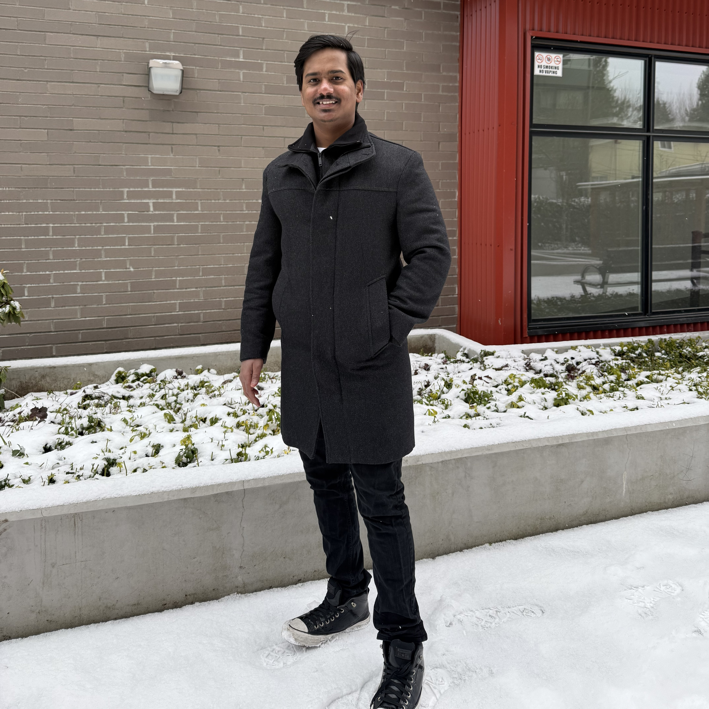

Technology Lead/Project Manager at Infosys Limited | Crafting Excellence through Technology and Creativity | Problem Solver | Member of the Project Management Institute | Information Technologist |
A graduate in
B.Tech Information Technology from Chennai working as Technology Lead/Project Manager
at Infosys Canada.
Experienced Project Manager and Technology Leader with 9 years of managing cross-functional
teams in the development and optimization of large-scale, high-performance systems.
Expertise in Agile methodologies, backend architecture, and driving cost optimization efforts.
Proven track record of managing complex technical projects, reducing operational costs, and
improving system performance. Passionate about leading teams to innovate and deliver
customer-focused solutions, and experienced in delivering software projects in healthcare,
network operations, and web development.
Developed and implemented two automation tools, reducing manual workload and improving
efficiency in daily operations.
Interested in philanthropic activities to help the poor through our friends and well wishers.
Been part of the National Service Scheme during the college days. We have painted and built toilets in schools in the remote villages of Chengalpet, Tamilnadu.
My goal is to become a recognized leader in the Information Technology industry while consistently achieving set targets and goals at regular intervals.
I aspire to contribute to society through a career that directly benefits those in need, with a focus on improving the lives of the less fortunate.
What People think about me
"I’ve had the privilege of working closely with Santhosh in multiple projects, and I can confidently say he is one of the most effective and technically sound leaders I’ve come across in the IT industry.
As a Team Lead and Project Manager, he combines deep technical expertise with exceptional leadership skills. Whether it’s system architecture, cloud infrastructure, or complex software delivery timelines, Santhosh brings clarity, strategy, and calm execution to every challenge. His ability to guide teams through ambiguity, deliver scalable solutions, and stay aligned with business goals is nothing short of impressive.
What truly sets him apart is his collaborative mindset and the way he empowers his team. He’s approachable, solution-oriented, and always eager to mentor — making him not just a great manager, but a trusted partner in any technical journey.
Any organization would be lucky to have Santhosh Kumar leading their tech initiatives." - Manpreet Singh
"I had the pleasure of working closely with Santhosh during his time as a contractor for our company (Molina Healthcare) in the area of IT. Santhosh was employed by Infosys and served as a key member of the Application Management Services (AMS) team. In this capacity, he supported several critical applications and processes for which I was the subject matter expert.
Santhosh consistently demonstrated a high level of reliability and professionalism. He approached every task with dedication and delivered excellent results, often going above and beyond expectations to ensure smooth operations. Our various systems were mission critical and often involved late nights and high-pressue situations, which he handled well.
I would highly recommend Santhosh for any role requiring technical ability, dependability, and a commitment to excellence. He would be a tremendous asset to any organization, and I am confident he will continue to excel in his future endeavors.
I had the pleasure of working closely with Santhosh during his time as a contractor for our company (Molina Healthcare) in the area of IT. Santhosh was employed by Infosys and served as a key member of the Application Management Services (AMS) team. In this capacity, he supported several critical applications and processes for which I was the subject matter expert. Santhosh consistently demonstrated a high level of reliability and professionalism. He approached every task with dedication and delivered excellent results, often going above and beyond expectations to ensure smooth operations. Our various systems were mission critical and often involved late nights and high-pressue situations, which he handled well. I would highly recommend Santhosh for any role requiring technical ability, dependability, and a commitment to excellence. He would be a tremendous asset to any organization, and I am confident he will continue to excel in his future endeavors." - Erik Nelson
"I had the pleasure of working with Santhosh and can confidently say he is a highly promising and hardworking individual. He has consistently demonstrated a strong eagerness to learn, a solid work ethic, and an ability to quickly grasp complex concepts.
Throughout our time together, he showed great initiative in taking on new tasks and was always open to feedback, using it to improve and grow. He has a keen attention to detail, excellent problem-solving skills, and is a proactive team player, always willing to collaborate and contribute to group projects and proved himself to be the most valuable player in the team.
I have no doubt that he will continue to grow and thrive in his career, and I highly recommend him for any future opportunities." - Ajitha Antony
"I had pleasure of working closely with Santhosh on few challenging projects. We worked on several medium to complex reports and multiple automations. His skill with databases and programming is exceptional." -
Himanshu Singh
"Santhosh is a great team player and having excellent
knowledge in C# and.NET framework. He is always
keen to learn and adopt new skills. Very effective,
dedicated and focused at work and
had great experience working with him.
" - Antony Xavier Domnik
The Project Management Professional (PMP) certification is a globally recognized credential that validates a project manager's knowledge and experience in leading and directing projects. Offered by the Project Management Institute, it demonstrates a project manager's ability to apply project management principles, processes, and best practices across various industries.
The AWS Certified Developer Associate certification validates that an individual can develop, deploy, and debug applications on the AWS cloud platform. It demonstrates proficiency in using AWS services, APIs, and best practices for cloud application development.
The AWS Certified Cloud Practitioner is a foundational-level certification that validates a beginner's understanding of AWS cloud services, terminology, and architectural principles.
Pursuing the Project Management Professional certification being member of Project Management
Institute, the world's leading association
for those who consider project, program,
or portfolio management their profession;
and upholds the Institute's Code of Ethics
and Professional Conduct
The Google Project Management Certificate is an online program offered through Coursera.
It covers the fundamentals of project management, including planning, execution, risk management,
and communication. The course teaches both Agile and Waterfall methodologies, and provides
hands-on experience with tools like Asana, Trello and JIRA. The program takes about 6 months
to finish with 10 hours of study per week.
This certification helps Program Managers or aspiring program managers to get familiarized with Program management framework and all its focus areas like Strategic Planning, Risk, Scope, Governance, Stakeholder, Legal & Financial and so on. It provides a clear understanding of the program management concepts and to handle actual program scenarios by applying the program management practices and concepts
Certification for nurturing the skills for Agile project execution in a distributed environment at a project level. This is a scalable model to create a large talent pool that understands Infosys Global Agile and executes projects at higher maturity.
The Salesforce Certified AI Associate should be able to provide informed strategies and guide stakeholder decisions based on Salesforce's Trusted AI Principles. Candidates should be familiar with data management, security considerations, common business and productivity tools, and Salesforce Customer 360.
𝐍𝐒𝐒 𝐋𝐞𝐚𝐝𝐞𝐫 - Been a integral part of the National Service Scheme during the college
days.
Active service in NSS during the years 2012 – 2014.
I have been a part of NSS Special Camp and achieved in constructing 6
Communal toilets, ...2 rainwater harvesting pits and
pond cleaning at ozhalur
Village, chengalpattu conducted during the year 2012.
Worked in Blood Donation Camp in 2013,helped in collecting blood from
Volunteering Various donars (total of 350 donars) and donated to Raajiv Gandhi
Government
hospital,chennai. I have been a part of creating awareness on Road Safety to public at guduvancherry
signal for hours to enourmous public in 2012.
I have been a part of Seed Ball making and Seeding Ball Throwing and achieved a record
of above 5000 seeds in 2013.
I have been a part of achievement in planting more than 1000 trees at Mahindra city,
chengalpattu in the year 2014.
I have been the part of International Coastal Cleanup and achieved the motto of trash
free seas at elliots beach in the year 2018.
"Your work is going to fill a large part of your life, and the only way to be truly satisfied is to do what you believe is great work."